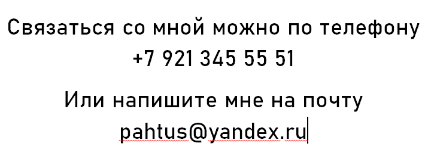

Все привет!, меня зовут Пахтусов Максим и эта моя "Мини Биография".
Я родился 19 августа 2000 года в селе Троица, это Кировская область.
В 7 лет я пошёл в школу в моём родном селе и учился там до 15 лет, до 9 классов.
А потом я переехал в город Киров и поступил учиться на юриста в Вятский техникум экономики статистики и информатики.
После окончания, меня забрали в армию, после служби я решил координально сменить свой основной род образовани и поступил в Вятский государственный университет на сети и системы.
